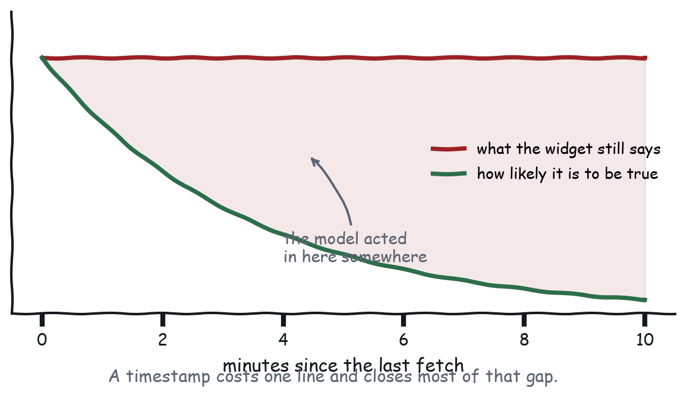
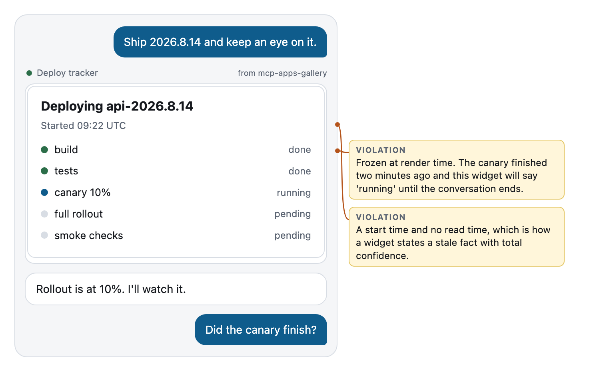
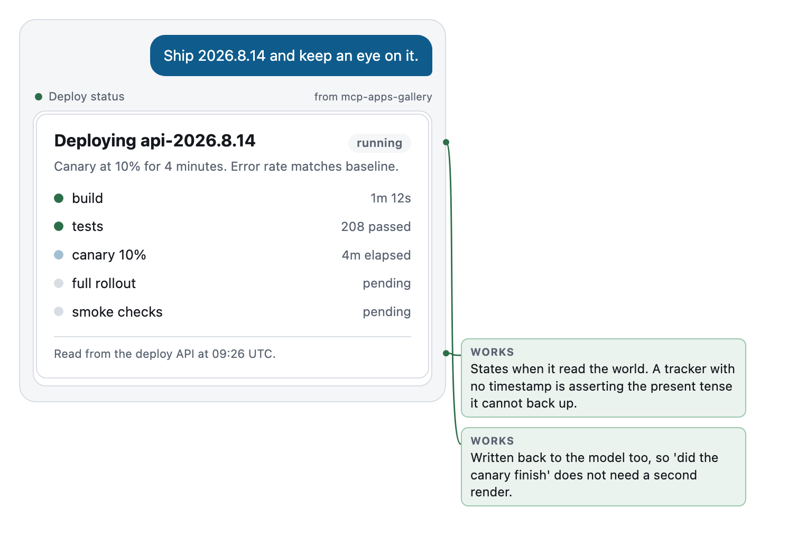

Chapter 7
State, or Knowledge in the World versus in the Head
What belongs in the widget, what belongs in the transcript, and why your widget can be wrong through nobody's fault.
Norman split knowledge into two kinds. Knowledge in the world is information you can see: the labels on the buttons, the shape of the plug, the position of the dial. Knowledge in the head is what you have to remember: the command, the password, which of the four identical switches is the one for the porch. Interfaces that put knowledge in the world are easy to use, and interfaces that demand knowledge in the head are the ones people write angry reviews about.
This medium has both, and the split falls in an unfamiliar place. Knowledge in the world is what is on screen in your widget. Knowledge in the head is what is in the model’s context. And the second one is durable while the first one is not, which inverts every instinct you have from building web applications, where the page was the thing that persisted and the memory was the thing that evaporated.
Two places to keep a fact
State in the widget is fast, private, and free. Slider positions, which disclosure is open, scroll position, the half-typed text in a field: all of it lives in the frame and dies with the frame. State in the context is slower, shared, costly, and durable, and it is where anything belongs that the model needs in order to answer a follow-up question, or that should survive the conversation moving on, or that a person would have said out loud.
Applied to a widget, the sorting comes out like this.
| Fact | Where |
|---|---|
| Which tab is open | Widget |
| Which flight the user picked | Context |
| Scroll position in the table | Widget |
| That the user changed the horizon to four years | Context |
| Whether the “advanced” disclosure is expanded | Widget |
| That the expense was submitted, and its ID | Context |
| The colour of the highlight | Widget |
| That the rollout reached 50% at 09:26 | Context |
The pattern is that decisions and outcomes go to the context while presentation stays in the widget. When you are unsure about a particular fact, the question that resolves it is whether a person narrating the session out loud would have mentioned it.
Preferences, and the storage you do not have
A related question with a shorter answer. Where does your app keep the user’s preference for compact rows, or metric units, or the columns they always open?
Not in the frame, because the frame is transient and Chapter 7 is about that. Not in the host’s storage, because the sandbox exists precisely to keep you out of it. Which leaves two places, and the choice is a design decision rather than a technical one.
On your server, keyed to whatever identity your authorisation already established. This is right for preferences that are genuinely the user’s and should follow them: units, locale, default views. It costs a round trip and it works everywhere.
Or in the conversation, by writing the preference back with ui/set-context and letting the model pass it as an argument next time. This is right for preferences that are really about this task: the horizon somebody chose, the service they were looking at. It costs nothing, survives exactly as long as the conversation does, and it is why Chapter 7 insists that anything worth returning to be expressible as an argument.
The failure mode is choosing the first when you meant the second. An app that persists “compare over three years” to a server profile has made a permanent decision out of a passing one, and the next conversation starts wrong.
The problem that is genuinely new
Now the part with no web analogue at all. Between your render and the user’s next glance at it, the model can act.
It can call your tool again with different arguments. It can call a completely different tool that changes the same underlying thing. It can do three of those in a row because the user asked it to, in one sentence, while your widget sat there. And your widget knows about none of it, because your widget is a static document in a sandboxed frame that was handed one result and then left alone.

On the web this happens too, and we handle it with polling, sockets, and optimistic updates. What is different here is the source of the change. It is not another user in another city acting on shared data. It is the same user, in this conversation, thirty seconds ago, using words instead of your buttons. Which makes the staleness feel like a lie rather than a race condition: the user literally just told the assistant to do the thing, and your widget, three inches away on the same screen, is still displaying the world as it was before they said it.
Three honest responses
You have three options, and the wrong one is to pretend the problem does not exist.
The cheapest is to timestamp everything, and it closes most of the gap on its own. Say when you read the world. As of 09:41 UTC. One line, and it converts an assertion about the present into a report about a moment, which is what it always was.
The second is to decay visibly: after some interval, say that you might be behind, and offer to check. The gallery’s tracker does this after twenty seconds.
setInterval(function () {
if (lastFetch && Date.now() - lastFetch > STALE_AFTER_MS) {
document.getElementById("stale").classList.add("show");
}
}, 2000);A badge saying may be out of date and a Check now button, in about eleven lines. This is more honest than polling, because polling makes a widget look live without making it live, and a widget that looks live is a widget that gets believed.
The third and best, where the data supports it, is to refresh on demand and let the model trigger it. The refresh path is the same tool call the model would make, which means the tool has to be safe to call repeatedly, and the gallery’s deploy_status says so out loud in its description: Safe to call again when the user asks whether anything changed. That sentence is a door handle for the second user.
What you should not do is fake liveness. An auto-refresh indicator on a widget that fetched exactly once is worse than no indicator at all, because it converts an inconsistency the user might have caught into one they will not.
Safe to call again
Two of those three responses depend on a property of your tool rather than of your widget, and it is easy to violate by accident. A tool that logs an audit event, sends a notification, or increments a counter every time it runs is not safe to call again, and the refresh button you just added is now a bug generator.
Three habits keep read tools clean. Separate reading from doing, so that deploy_status reads and promote_deploy does, and never one tool that reads and quietly also does. Say it in the description, because “safe to call again when the user asks whether anything changed” is written for the second user and is the difference between a model that refreshes and a model that hedges. And make writes idempotent where you can, with a key the caller supplies, so a retry after a timeout does not file the expense twice; the mechanics are in High-Performance MCP Applications, and the design point here is simply that the model retries, and it retries more readily than a human would.
Re-render from context
“Show me that dashboard again” should work. It is a completely reasonable thing to say four turns later, and in this medium it is not a navigation request, because there is no back button and no URL. It is a request for the model to call the tool again.
For that to produce the same dashboard rather than a generic one, two things have to be true. The tool must accept the parameters that made it specific, so if the user’s dashboard was scoped to a release, a date range, or an account, those have to be arguments rather than internal state; a tool with an empty input schema cannot be re-summoned specifically, which is the Chapter 4 lesson arriving from a different direction. And the model must know what those parameters were, which means they were written back, in content at render time and in ui/set-context whenever the human changed them.
Put those together and you get a small design contract: anything a user might want to return to must be expressible as arguments to your tool, and the model must have been told the values.
The contract, made concrete
Here is that contract as a diff on the gallery’s own dashboard, and it is a real finding from the first eval run in Chapter 11. Before, service_status declared inputSchema: { type: "object", properties: {} }. One address. “Just show me checkout” produced the whole platform, every time, because the tool had no way to be asked for anything narrower.
After:
inputSchema: {
type: "object",
properties: {
service: {
type: "string",
description: "Narrow to one service. Omit for the whole platform.",
},
},
},and one clause added to the end of the description: Safe to call again to check for changes.
Nine lines and a clause. Now “just show me checkout” works, “show me that again” works, and “has checkout recovered” works, because all three are expressible as arguments and the description says the call is repeatable. Note what did not change: not one pixel. The widget was already fine. The thing that could not be re-summoned was the tool, and the tool is the part the model addresses.
Teardown: two deploy trackers
The task: “ship 2026.8.14 and keep an eye on it.”

This one is a nice piece of work: clean step list, status dots, a start time. It also has exactly one fetch in its entire lifetime, and everything after that is a picture of a moment that has passed. The canary finished two minutes ago and this widget will say running until the conversation ends.
Look at the transcript underneath it. The user asks “did the canary finish?” and the model has to answer. It has one piece of information, from the original tool result, and that information says running, so the model says the canary is still running, in text, next to a widget that also says running. The user now has two independent-looking confirmations of something false. That is the real cost, and it is worth being precise about it: the problem is not that the widget is stale, it is that the widget’s staleness became the model’s answer, so the error got laundered into confidence.
Notice the header too. Started 09:22 UTC. A start time and no read time, which means the one timestamp it shows is the one that cannot go stale and the one it needs is missing.

Four changes, none of them large. Read from the deploy API at 09:26 UTC at the bottom. The phase as a pill, so the verdict sits at level one. A may be out of date badge that appears on a timer with a Check now button beside it. And setContext on every paint, so the model has the phase, the summary, and the read time without needing another render. Now “did the canary finish?” gets answered from context that carries its own timestamp, and if the model is unsure, it can call the tool again, because the tool said it was safe to.
Optimistic updates, and when to lie
One nuance, because the advice above can be read as “never show anything you have not confirmed”, which would make every widget feel slow.
Optimistic updates are fine. Show the state the user just asked for immediately, before the round trip completes, because that is responsiveness rather than staleness and users read the delay as breakage. The rule is that the optimism has to be reversible and visible: if the call fails, say so, in place, and put the old value back. And do not write an optimistic state to the model’s context, because the model cannot see your rollback. Write back on confirmation only. Optimistic in the world, confirmed in the head, which is this chapter’s split doing something useful.
Work that takes longer than a render
Some tools finish in eighty milliseconds and some take four minutes, and the second kind changes what a widget is for.
The core protocol has an answer to the plumbing, which is the Tasks extension: the call returns a handle immediately, the work continues, and the client polls or gets notified. High-Performance MCP Applications covers the mechanism. What that leaves you with is a design question the mechanism does not answer, which is what the human looks at for four minutes.
There are three shapes and the choice is not really about the duration. It is about whether the waiting is interesting. If the work is opaque and the user has nothing to decide, do not render at all: let the model say “that will take about four minutes, I will tell you when it lands”, and render when it does. A progress bar for an opaque process is a widget whose entire content is the fact that you are still running, which the sentence already said, more cheaply, in a form the user can scroll past.
If the work has stages the user recognises, render a tracker, because the stages are information: build, tests, canary, rollout is a sequence somebody can reason about, and knowing that you are stuck on tests is worth more than knowing you are 43% done. This is the archetype from Chapter 5, and the whole of this chapter applies to it, which is why timestamping matters more here than anywhere.
And if the work produces partial results, render them as they arrive, because partial results are the one case where watching genuinely beats waiting. Ten of forty invoices reconciled, with the ten visible, lets somebody start reading while the rest lands.
Whichever you choose, the second user needs telling too, and this is the part people miss. A long-running job that reports nothing until it finishes leaves the model unable to answer “is that done yet” for four minutes, so it either guesses or calls the tool again, and calling the tool again is how you get two of them running. Write back at the transitions, not continuously: started, reached a milestone, finished, failed. Four lines over four minutes is enough for the model to answer every question anybody will ask.
Two widgets, one truth
A last case, because it appears the moment a server has more than one app. The user renders the deploy tracker. Three turns later they render the service status card. Both are now on screen, both are describing the same production system, and they were fetched four minutes apart. There is no mechanism keeping them consistent, and there should not be: they are separate documents in separate frames with no channel between them.
That leaves three honest options, and the wrong one is to hope. Timestamp both, which is the cheap fix again and converts a contradiction into two reports from different moments, something a person can reason about. Let the conversation reconcile, which means both write back, the model holds both with their times, and the follow-up gets answered from the newer one; this is what the transcript is for and it works as long as both apps wrote back. Or do not build the second widget, which is often correct, because two renders describing the same system is usually the Chapter 5 problem in disguise: one archetype split across two tools that should have been one, or one tool that should have taken an argument.
What to remember
Presentation lives in the widget and dies with it. Decisions and outcomes go to the context and survive. The model can act between your renders, so a widget that asserts the present tense without a timestamp is claiming more than it knows. Timestamp, decay visibly, refresh on demand, and make your tool safe to call again so the model can do it for you.
Next chapter: getting around, in a house with no doors.